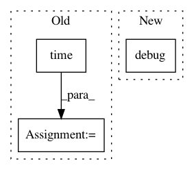

0c38e590acabc8f2fcc38cb4db56332a73422f68,brian2/core/network.py,Network,run,#Network#Any#Any#Any#Any#Any#Any#,728
Before Change
clock, curclocks = self._nextclocks()
if report is not None:
report_period = float(report_period)
start = current = time.time()
next_report_time = start + report_period
if report == "text" or report == "stdout":
report_callback = TextReport(sys.stdout)
elif report == "stderr":
After Change
report_callback((end_time-start_time)*second, 1.0, t_start, duration)
self.after_run()
logger.debug(("Finished simulating network "%s" "
"(took %.2fs)") % (self.name, end_time-start_time),
"run")
// Store profiling info (or erase old info to avoid confusion)
if profile:
self._profiling_info = [(name, t*second)
for name, t in profiling_info.iteritems()]
In pattern: SUPERPATTERN
Frequency: 3
Non-data size: 3
Instances
Project Name: brian-team/brian2
Commit Name: 0c38e590acabc8f2fcc38cb4db56332a73422f68
Time: 2016-01-25
Author: marcel.stimberg@inserm.fr
File Name: brian2/core/network.py
Class Name: Network
Method Name: run
Project Name: eth-cscs/reframe
Commit Name: ea6edcb4359e97d4dda2fe0cdfab7ef677593332
Time: 2020-06-03
Author: eirini.koutsaniti@cscs.ch
File Name: reframe/frontend/executors/__init__.py
Class Name: RegressionTask
Method Name: _safe_call
Project Name: RasaHQ/rasa
Commit Name: ed9d8f54d720409b8ca816e324845aaec5a91e89
Time: 2020-11-05
Author: t.wochinger@rasa.com
File Name: rasa/core/processor.py
Class Name: MessageProcessor
Method Name: _log_action_on_tracker